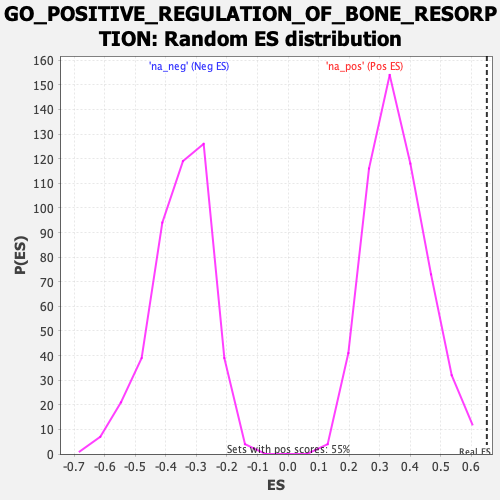

| | | Dataset | PFS |
| Phenotype | NoPhenotypeAvailable |
| Upregulated in class | na_pos |
| GeneSet | GO_POSITIVE_REGULATION_OF_BONE_RESORPTION |
| Enrichment Score (ES) | 0.6504795 |
| Normalized Enrichment Score (NES) | 1.816914 |
| Nominal p-value | 0.0 |
| FDR q-value | 1.0 |
| FWER p-Value | 0.986 |
Table: GSEA Results Summary
 Fig 1: Enrichment plot: GO_POSITIVE_REGULATION_OF_BONE_RESORPTION
Fig 1: Enrichment plot: GO_POSITIVE_REGULATION_OF_BONE_RESORPTION
Profile of the Running ES Score & Positions of GeneSet Members on the Rank Ordered List

Fig 2: GO_POSITIVE_REGULATION_OF_BONE_RESORPTION: Random ES distribution
Gene set null distribution of ES for GO_POSITIVE_REGULATION_OF_BONE_RESORPTION